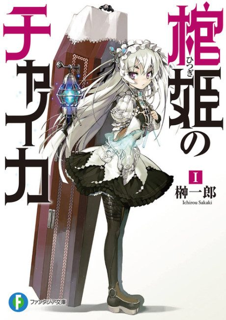

Chaika -The Coffin Princess-
棺姫のチャイカ
Toru, a former soldier with nothing to do in peacetime, meets Chaika, a girl carrying a coffin who hires him to help gather her father's remains.
We haven't found where the anime ends in the light novel yet.
6.9AniList score
—Animeter, no votes yet
22episodes, 2 seasons
Rate it or report where you stopped
Is it worth pushing through?
Built from what visitors report across all 2 seasons (22 episodes).
Loading reports…Checking what other people said about this one.
Sign in above with your email to add your report.
More like Chaika -The Coffin Princess-
 Own end8.0
Own end8.0
 Manga Ch. 487.9
Manga Ch. 487.9
 Done7.5
Done7.5
 Manga Ch. 807.9
Manga Ch. 807.9
 Manga Ch. 377.7
Manga Ch. 377.7
 Unclear7.4
Unclear7.4
 Manga Vol. 97.4
Manga Vol. 97.4
 Film8.4
Film8.4
 Manga Vol. 57.3
Manga Vol. 57.3
 Manga Vol. 67.2
Manga Vol. 67.2
 Original7.4
Original7.4
 Done7.1
Done7.1